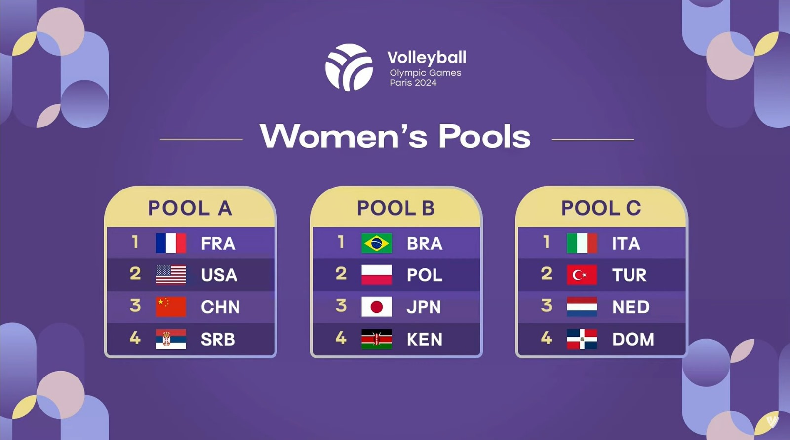
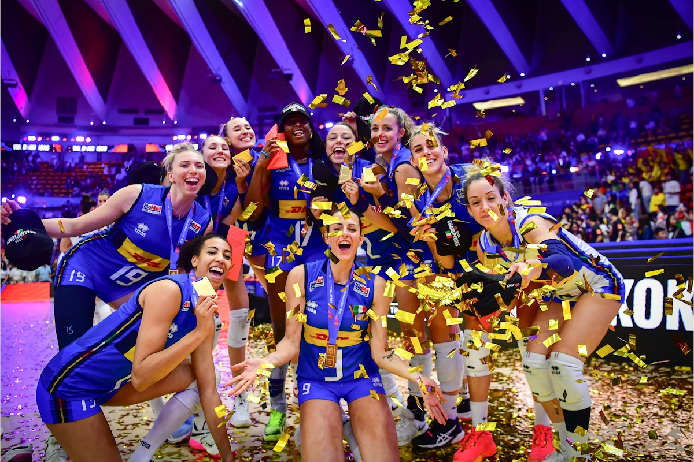

Il cammino dell’Italia a Parigi 2024
Il torneo olimpico di pallavolo femminile di Parigi 2024 è stato un percorso storico per la Nazionale italiana. Le Azzurre sono arrivate ai Giochi con grandi aspettative e hanno saputo trasformare quel percorso in una vittoria indimenticabile.
L’Italia ha iniziato dalla fase a gironi, dove ha affrontato Repubblica Dominicana, Paesi Bassi e Turchia. Fin dalle prime partite la squadra ha mostrato sicurezza, carattere e capacità di crescere gara dopo gara.
Dopo il girone, il cammino è continuato con la vittoria contro la Serbia ai quarti di finale, poi con il successo in semifinale contro la Turchia e infine con la finale contro gli Stati Uniti, che ha regalato all’Italia la medaglia d’oro.
Le fasi del torneo
Da qui puoi andare direttamente alle pagine dedicate alle varie fasi.
Girone Quarti di finale Semifinale FinaleIl girone
La prima fase del torneo è stata quella a gironi. L’Italia è stata inserita nella Pool C insieme a Repubblica Dominicana, Paesi Bassi e Turchia. Il girone non era semplice, ma le Azzurre hanno saputo affrontarlo con grande personalità.
La Nazionale ha vinto tutte e tre le partite, mostrando una crescita costante. La vittoria contro la Repubblica Dominicana ha dato fiducia, quella contro i Paesi Bassi ha confermato la continuità del gioco e quella contro la Turchia ha mandato un segnale forte alle altre squadre.
Vai al girone

I quarti di finale
Dopo la fase a gironi, il torneo è entrato nella parte più delicata: quella a eliminazione diretta. Nei quarti di finale l’Italia ha affrontato la Serbia, una nazionale esperta e abituata alle grandi competizioni.
Le Azzurre hanno vinto 3-0, riuscendo a imporre il proprio ritmo e a mantenere ordine nei momenti importanti. Questa partita ha confermato la maturità della squadra e la capacità di gestire la pressione.
Vai ai quarti di finaleLa semifinale
In semifinale l’Italia ha ritrovato la Turchia. Era una partita molto diversa rispetto a quella del girone, perché in palio c’era l’accesso alla finale olimpica.
La squadra ha saputo gestire la tensione e ha vinto ancora 3-0. Questa vittoria ha portato l’Italia alla prima finale olimpica della sua storia nella pallavolo femminile, rendendo il percorso già memorabile.
Vai alla semifinale

La finale olimpica
La finale contro gli Stati Uniti è stata il momento più importante del torneo. L’Italia è arrivata all’ultima partita con sicurezza, concentrazione e voglia di completare un cammino storico.
Le Azzurre hanno vinto 3-0, conquistando la medaglia d’oro olimpica. È stato un risultato storico, perché per la prima volta la Nazionale italiana femminile di pallavolo è salita sul gradino più alto del podio olimpico.
Vai alla finaleRisultati principali ▼
Ecco i risultati principali ottenuti dall’Italia durante il percorso olimpico di Parigi 2024.
| Fase | Partita | Risultato |
|---|---|---|
| Girone | Italia - Repubblica Dominicana | 3-1 |
| Girone | Italia - Paesi Bassi | 3-0 |
| Girone | Italia - Turchia | 3-0 |
| Quarti di finale | Italia - Serbia | 3-0 |
| Semifinale | Italia - Turchia | 3-0 |
| Finale | Italia - Stati Uniti | 3-0 |
Protagoniste del torneo ▼
| Nome | Ruolo |
|---|---|
| Julio Velasco | Allenatore |
| Alessia Orro | Palleggiatrice |
| Carlotta Cambi | Palleggiatrice |
| Paola Egonu | Opposto |
| Ekaterina Antropova | Opposto |
| Myriam Sylla | Schiacciatrice |
| Caterina Bosetti | Schiacciatrice |
| Loveth Omoruyi | Schiacciatrice |
| Gaia Giovannini | Schiacciatrice |
| Anna Danesi | Centrale |
| Sarah Fahr | Centrale |
| Marina Lubian | Centrale |
| Monica De Gennaro | Libero |
| Ilaria Spirito | Libero |